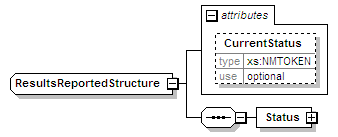
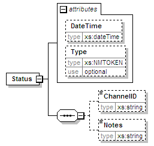
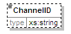
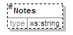

| diagram |  | ||||||||||||
| namespace | urn:oasis:names:tc:evs:schema:eml | ||||||||||||
| children | Status | ||||||||||||
| used by |
|
||||||||||||
| attributes |
|
||||||||||||
| source | <xs:complexType name="ResultsReportedStructure"> <xs:sequence> <xs:element name="Status"> <xs:complexType> <xs:sequence> <xs:element name="ChannelID" type="xs:string" minOccurs="0"/> <xs:element name="Notes" type="xs:string" minOccurs="0"/> </xs:sequence> <xs:attribute name="DateTime" type="xs:dateTime"/> <xs:attribute name="Type" type="xs:NMTOKEN" use="optional"/> </xs:complexType> </xs:element> </xs:sequence> <xs:attribute name="CurrentStatus" type="xs:NMTOKEN" use="optional"/> </xs:complexType> |
| type | xs:NMTOKEN | ||||
| properties |
|
||||
| source | <xs:attribute name="CurrentStatus" type="xs:NMTOKEN" use="optional"/> |
| diagram |  | ||||||||||||||||||
| namespace | urn:oasis:names:tc:evs:schema:eml | ||||||||||||||||||
| properties |
|
||||||||||||||||||
| children | ChannelID Notes | ||||||||||||||||||
| attributes |
|
||||||||||||||||||
| source | <xs:element name="Status"> <xs:complexType> <xs:sequence> <xs:element name="ChannelID" type="xs:string" minOccurs="0"/> <xs:element name="Notes" type="xs:string" minOccurs="0"/> </xs:sequence> <xs:attribute name="DateTime" type="xs:dateTime"/> <xs:attribute name="Type" type="xs:NMTOKEN" use="optional"/> </xs:complexType> </xs:element> |
| type | xs:dateTime | ||
| properties |
|
||
| source | <xs:attribute name="DateTime" type="xs:dateTime"/> |
| type | xs:NMTOKEN | ||||
| properties |
|
||||
| source | <xs:attribute name="Type" type="xs:NMTOKEN" use="optional"/> |
| diagram |  | ||||||||
| namespace | urn:oasis:names:tc:evs:schema:eml | ||||||||
| type | xs:string | ||||||||
| properties |
|
||||||||
| source | <xs:element name="ChannelID" type="xs:string" minOccurs="0"/> |
| diagram |  | ||||||||
| namespace | urn:oasis:names:tc:evs:schema:eml | ||||||||
| type | xs:string | ||||||||
| properties |
|
||||||||
| source | <xs:element name="Notes" type="xs:string" minOccurs="0"/> |